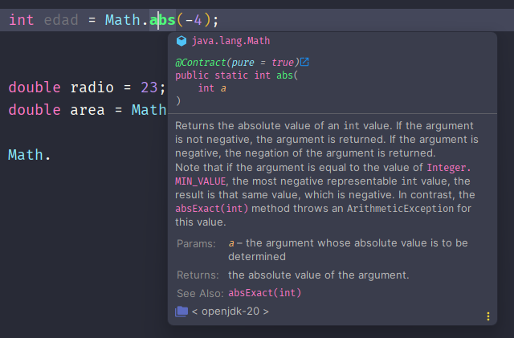

FuncionesVentajas de utilizar funcionesDefinición de la funciónLlamada a la funciónEjemploFunciones definidas en JavaFunción Math.abs()Función Math.pow()Función String.length()Función String.toUpperCase() y String.toLowerCase()Función String.substring()Ayuda con el IDEFunciones encadenadasHacer tus propias funciones en Java
Funciones
En programación, una función es un bloque de código diseñado para realizar una tarea específica. Puedes pensar en las funciones como pequeños fragmentos de un programa que puedes llamar para realizar una operación concreta.
Una función puede recibir valores, llamados parámetros (inputs) , y devolver un valor, llamado valor retornado (output). Ambos valores son opcionales, es decir, no tiene porqué recibir valores ni retornarlos.

Una función es como una receta en programación: es un bloque de código que realiza una tarea específica. Le puedes dar datos (llamados parámetros) y, al final, te devuelve un resultado o simplemente hace algo. La idea es que puedas usar esa función siempre que la necesites, sin tener que escribir el mismo código una y otra vez.
Ventajas de utilizar funciones
Reutilización de código: Las funciones permiten escribir código una vez y reutilizarlo en diferentes partes del programa. Así evitamos líneas de código duplicadas.
Mantenimiento sencillo: Los cambios en el código de una función afectan solo a esa función, facilitando el mantenimiento del programa.
Abstracción y legibilidad: Ocultan los detalles internos de la implementación, proporcionando una interfaz clara para interactuar con el código.
Para entender y empezar a construir nuestras funciones, debemos entender y diferenciar dos conceptos muy importantes. La definición de una función y la llamada a una función.
Definición de la función
Es cuando se escribe el código que compone la función. En ese código es dónde especificaremos qué hace la función y cómo lo hace, si recibe parámetros o como se calcula el valor devuelto.
Por ejemplo, una función en matemáticas, se puede definir así:
Estamos indicando que la función recibe un valor
Important
Hay que tener claro que todavía no estamos usando la función ni ejecutándola, tan solo estamos definiendo su comportamiento, los valores que debe recibir y retornar (si es que los recibe o retorna).
Llamada a la función
Es cuando hacemos uso de la función previamente definida y su código es ejecutado.
Si la función tuviese parámetros, se le tendrán que pasar en su llamada.
Si la función tuviese valores retornados, se tendrán que usar en una expresión (guardarlos en una variable, imprimirlos por pantalla, usarlos en otra función, etc.) si queremos aprovecharlos. Si no se usan, el valor devuelto se perderá.
Por ejemplo, la misma función definida anteriormente, podríamos hacer una llamada así.
En este ejemplo:
El valor recibido como parámetro es
Lo que hace la función es sumarle un
El valor retornado es
Es muy importante entender que primero hay que definir la función y después hacer la llamada.
Caution
Si intentamos llamar a una función que no está definida, provocará un error.
Ejemplo
Veamos otro ejemplo de definición y llamada a la función, explicando paso a paso todo, y sin todavía ver como se hacen en Java. El recordar las funciones en matemáticas nos ayudará mucho a entenderlas en programación, sea el lenguaje que sea.
Definición:
Ahora la función recibe dos parámetros llamados
Llamada:
Al hacer la llamada a la función, le pasamos como parámetros un
La función ejecutará su comportamiento (elevar la base
Tip
La gran ventaja de las funciones, es que las defines UNA VEZ, y las llamas MUCHAS VECES, las que necesites. Imagina por un momento que la función hace operaciones mucho más complejas que la de ejemplo. Ahí es cuando le vemos mayor ventajas a las funciones. También reducen la complejidad de nuestros algoritmos, ayudándonos en tareas repetitivas.
Funciones definidas en Java
Java tiene muchas funciones ya definidas en el lenguaje, que se pueden usar para facilitar el desarrollo de programas. Algunas de estas funciones pertenecen a clases especiales llamadas librerías, que agrupan funciones relacionadas con un tema o propósito. Por ejemplo, la clase Math contiene funciones matemáticas, y la clase String contiene funciones para manipular cadenas de texto.
Estas funciones ya están definidas por la JDK de Java, por lo que solo es necesario hacer una llamada a la función que deseemos.
Veamos algunos ejemplos de funciones básicas ya definidas en Java:
Función Math.abs()
La función Math.abs(x) recibe un número y retorna su valor absoluto (su valor sin signo). Por ejemplo Math.abs(-5) devuelve 5 y Math.abs(3) devuelve 3.
xxxxxxxxxx61// Una función puede recibir los parámetros como literales o como variables2int numeroConSigno = -3;3int numeroSinSigno = Math.abs(numeroConSigno);4
5// La variable edad ya habría sido definida en algún punto del código6edad = Math.abs(edad);Función Math.pow()
La función Math.pow(x,y) recibe dos parámetros, una base y un exponente y retorna el resultado de elevar la base al exponente.
Math.pow(2,3):8.Math.pow(10,-2):0.01.
xxxxxxxxxx91// Las funciones pueden formar parte de una expresión2double radio = 23;3double area = Math.PI * Math.pow(radio,2);4
5// Aquí también forma parte de una expresión6System.out.println("2 elevado a 6 es " + Math.pow(2,6));7
8// Y aquí el valor retornado se iría al cielo de los valores 😇9Math.pow(5,8); // No provoca errores, pero el valor se pierde🧑🏫 ¿Que pasaría si la variable
areala definimos comofloaten lugar dedouble?
Función String.length()
Esta función devuelve el número de caracteres que tiene una cadena de texto. La poseen todas las variables y literales de tipo String.
xxxxxxxxxx61String nombre = "Ryu";2int letras1 = nombre.length(); // letras1 = 33int letras2 = "Chun Li".length(); // letras2 = 74int letras3 = "".length(); // letras3 = 05
6letras1.length(); // Daría un error de compilación debido a que letras1 no es de tipo String🤓 Fíjate que es es la primera función que vemos que no recibe ningún parámetro, pero si devuelve un valor de tipo
int.
🪄 Con esta función aprenderás a apreciar el autocompletado, cada vez que te confundas y escribas
lenght()en lugar delength().
Función String.toUpperCase() y String.toLowerCase()
Las funciones .toUpperCase() y .toLowerCase() devuelven la misma cadena, pero convirtiendo todos los caracteres alfabéticos en mayúsculas o minúsculas, respectivamente.
xxxxxxxxxx61String saludo = "Hola!";2System.out.println(saludo.toUpperCase()); // Imprime "HOLA!"3System.out.println(saludo.toLowerCase()); // Imprime "hola!"4
5String nombreMin = "Brad Pitt".toLowerCase(); // nombreMin = "brad pitt"6String nombreMay = nombreMin.toUpperCase(); // nombreMay = "BRAD PITT" Note
En los ejemplos se puede apreciar que la conversión solo afecta a los caracteres que deben cambiar de mayúsculas a minúsculas o viceversa, manteniendo el resto sin alteraciones.
Función String.substring()
La función substring() en Java es un método que permite obtener una parte de una cadena original, especificando indicando las posiciones inicial y final de la subcadena deseada.
El índice inicial es inclusivo y el índice final es exclusivo, es decir, la subcadena contiene el carácter en el índice inicial pero no el carácter en el índice final. Toda esta información viene en su documentación oficial, como verás en el siguiente apartado.
Si solo se indica un parámetro, será el índice inicial y el final será la longitud de la cadena, es decir, retornará desde la posición indicada inclusive hasta el final.
xxxxxxxxxx71String cadena = "Hola Mundo"; // Mira la tabla de abajo 🧐2String subcadena1 = cadena.substring(0,3); // Contiene "Hol"3String subcadena2 = cadena.substring(0,6); // Contiene "Hola M"4String subcadena3 = cadena.substring(5,10); // Contiene "Mundo"5String subcadena4 = cadena.substring(5,11); // Provocará error6String subcadena5 = cadena.substring(4); // Contiene " Mundo"7int longitud = cadena.length(); // Contiene 10| Cadena | H | o | l | a | M | u | n | d | o | |
|---|---|---|---|---|---|---|---|---|---|---|
| Índices | 0 | 1 | 2 | 3 | 4 | 5 | 6 | 7 | 8 | 9 |
Ayuda con el IDE
Como ya hemos visto, los IDEs (Entorno de desarrollo integrado) son programas que facilitan la tarea de programar en un determinado lenguaje, como Java. Concretamente para las funciones pueden ayudarnos ofreciéndonos la siguiente información:
Autocompletado: Nos mostrará sugerencias de posibles palabras clave, variables, clases o funciones que coincidan con lo que se está escribiendo. Esto nos ayuda a ahorrar tiempo y evitar errores de sintaxis o de escritura: Por ejemplo, al escribir
Math.nos mostrará una lista de las funciones disponibles en la claseMath, comoabs(),pow(),PI,sin(),cos(), etc.Tip
Ejemplo de autocompletado con la clase
Math. Podemos ver también que nos indican el número de parámetros recibidos, los tipos de datos admitidos, y el tipo del valor devuelto.
Documentación: También suelen tener una función que permite acceder a la documentación oficial del lenguaje, mostrando información sobre el uso, los parámetros, el valor de retorno así como el tipado de los mismos. Normalmente para abrir la documentación, bastará con dejar el ratón unos segundos sobre el nombre de la función.
Tip
Ejemplo de documentación de la función
Math.abs(). Vemos una descripción en inglés de la función. Normalmente la descripción será demasiado técnica y tendremos que abstraernos un poco de tanta información proporcionada.Params:Explica todos los argumentos que puede recibir la función y su papel en el algoritmo interno de la misma.Returns:Explica el valor retornado.

Se recomienda que siempre te pares un momentito a leer la documentación de las funciones que vayamos viendo para ir familiarizándote con toda la información proporcionada. Java posee miles de funciones y tendrás que estar continuamente leyendo documentación ya que es imposible e innecesario memorizarlo todo.
La mayoría de errores que se producen (y sobre todo al empezar), son debidos a no leer la documentación. Ahí nos explicarán los tipos de los valores recibidos y los tipos de los valores devueltos.
Funciones encadenadas
En programación, el encadenamiento de funciones es una práctica que implica llamar a varias funciones en una sola línea, conectando la salida de una función con la entrada de otra. Este enfoque ofrece un código más conciso y legible, ya que permite realizar operaciones complejas de manera eficiente y ordenada.

Hay que tener en cuenta que el tipo de dato producido por una función deberá admitirse como parámetro en la siguiente función. En el dibujo lo vemos representado en que la función
Veamos un ejemplo en código Java:
xxxxxxxxxx31String texto = "Hola caracola";2String resultado = texto.substring(0,9).toUpperCase().concat("MELITO");3// resultado = "HOLA CARAMELITO"Si se encadenan muchas funciones de forma que se complica la legibilidad, es recomendable escribirlo de la siguiente forma:
xxxxxxxxxx41String resultado = texto2 .substring(0,9) // Extraemos los primeros 9 caracteres 3 .toUpperCase() // Los convertimos a mayúsculas4 .concat("MELITO"); // Y le concatenamos la subcadena "MELITO"
Hacer tus propias funciones en Java
En Java, como en todos los lenguajes de programación, se pueden definir tus propias funciones para después poder llamarlas y que sean ejecutadas.
Cuando veamos programación orientada a objetos y los conceptos de clases y objetos, veremos que los objetos pueden tener métodos. A eso que llamamos métodos, serán las funciones en Java. En ese momento, ya conociendo el concepto de función podremos entender perfectamente como se crean de la forma correcta.
Ahora mismo podríamos crear una función sin crear objetos, pero didácticamente no es el momento adecuado. Deberíamos entender otros conceptos como static y no sería buena idea.
Un poquito de paciencia y pronto lo veremos, por ahora entiende el concepto de función y aprende a usar las funciones incorporadas de Java haciendo los ejercicios propuestos.